3. Computer-controlled cutting
Design, make, and document a press-fit construction kit
Learning laser cutter
It's been already two weeks from the start of the academy. I'm going to use X-Cut model that are installed in Fab Lab Seoul. When i started the Fab Lab Academy i didn't want to just use the program or just click few of the buttons. I wanted to know the system of how the laser works and what are the things needed to keep maintenance.
Fab Lab Seoul instructor was very kind enough to teach me how the laser printer works as a whole machine. He showed me the laser part at the back and how it has to be used with compressor and air cleaning system.
Good things about Fab Academy is that i could follow the safety guidelines and get used to being a user that knows the correct procedures of using the heavy machines.
One of the tips my that instructor told me was to use the paper-tape in order to find whether the laser point is pointing at the right place of lenses. When the paper-tape has made a hole in the middle it means it's in the right place. when it's not we have to check where the lenses are reflecting the laser differently than the others. It was good to know the manual to fix the problem.
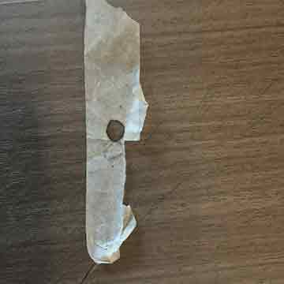 |
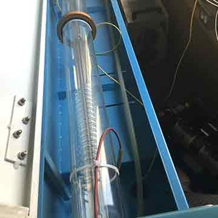 |
Check laser in the middle |
Behind the laser cutter |
Circles and Squares
It's always good to know how thing works. I found that even with the same speed and power the round-shaped image and squares are not treated the same when using the laser cutter. This little tip helped me a lot during playing as a role for the 'Make-a-thon' that my institute was helding. I could give advice to other users who don't know anything about laser cutter. Understanding the mechanism laser cutter has right now. We have to be more careful when dealing with the round movement than horizontal or vertical movement. Because lasers are stayed little bit longer than x-y normal movement. That's why we have to think again when we're dealing with un-cutted material.
Before cutting what do i need to do?
As i went along the past archives, i found that some people were doing the adjustment or some what called adjusting the origin-axis at the beginning. Reason why i needed adjustment is because in case there would be some mis-matching joint when doing the press & joint. With 3D-printed calibration tool x-cut model is calibrated for better cutting. It has to slide easily for its perfect height.
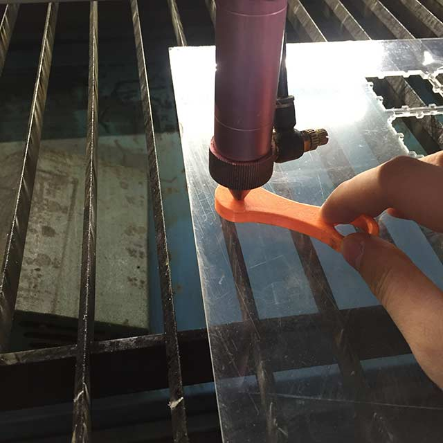 |
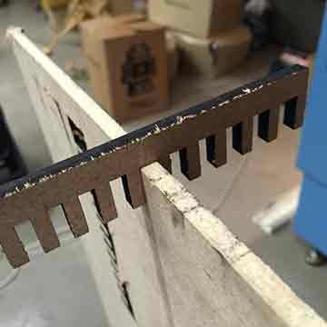 |
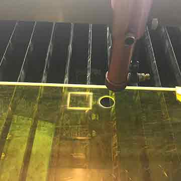 |
Z-axis calibration |
Press-fit joint test |
round-square test |
One of the tips that i've learnt was opening the laser cutter hood and carefully touching it with calipers or any usable thong to check if the materials are cut or not. Better with safety it’s better to cut several times on same paths than to cut it in one toolpath.
Right above is the video when tried to cut joint ruler for testing 6T MDF didn’t cut with 80mm/s & 50% of power. It would have been better to touch before taking the material out of the laser cutter.
I had to take care of diameter of laser carefully, when doing adjustment in 2D design program what I must think is 0.2mm of radius of laser must be taken care of otherwise the tool would be not in perfect fit.
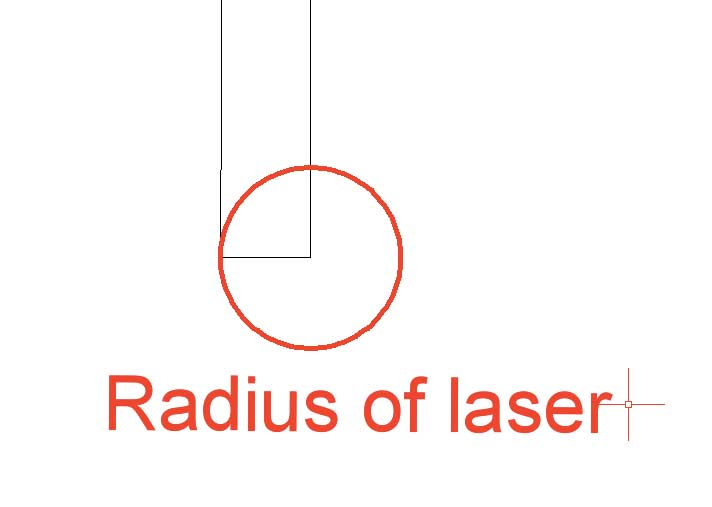 |
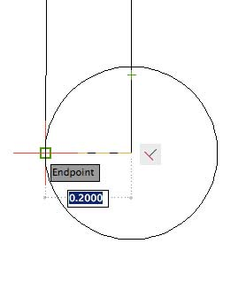 |
I found out that in Autocad 2015 program, making a distance of 1.2 (one point two) is very suitable to fit the pieces. my ruler is not so tight and easily joined with hand-strength. I measured the MDF(6T) and estimated to make the hole which can join the pieces right away.
With just a trial I engraved my personal photo of my own to the MDF frame. Using the speed of 250mm/s and power of 15% of laser I could get decent image for photo frame.
At first, my intend was very simple. Valentine's day was coming up and i wanted to learn how to engrave photos to the material. With help of my colleague i managed to learn the basic control of using laser cutter and editing the image at the Photoshop before engraving. Using the 'threshold' button and with the measure of 128 (mostly recommended). It's quite difficult to recognize but I could make the picture frame on my own.
Korean hanging picture frames
When I was thinking to myself about the project i wanted the create the part that is my own design it would be awesome the make something larger. Even with lots of failures and struggle to make the right pieces and joints with proper edge to join the two, was on-going process and process.
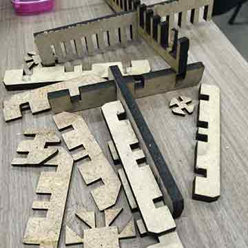 |
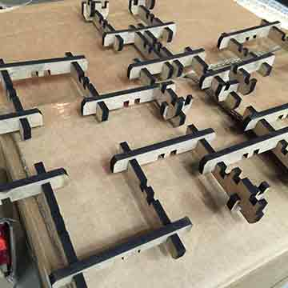 |
Output of different joints |
Variety of joints fixed together |
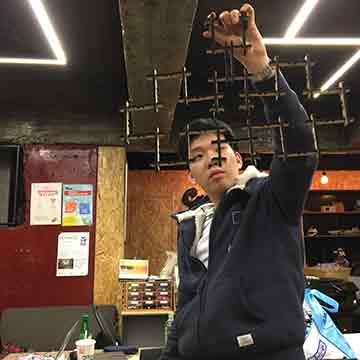 |
|
Making frame to be a real-thing |
Inspiration of Korean window frame |
I haven't finished the hanging part but my idea was very simple. make the Korean traditional window looking-like frame and hang the engraved picture for hanging at the wall. Like in the picture I've created parts in lots of different sizes and tried it to make more symmetric and joined together to make the window looking like shape.
It doesn't look quite fancy however, It was quite meaningful for me to have a chance to calculate more thoroughly and think about the after-joint. Some of my model parts were out of order and it was making it more hard to make me decide about the length angle or sizes between two other parts.
Chess? No! It's the 'Hammer Chess'
I wanted to try the entertainment stuff with the MDF material. I happened to have a chance with 'Universal Laser Printer' in one of the maker-space which are organized by Government. I participated in Make-a-thon and could use the other type of Laser cutter.
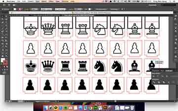 |
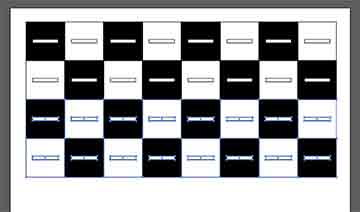 |
Illustrator designed chess pieces |
Checking holes to fit pieces |
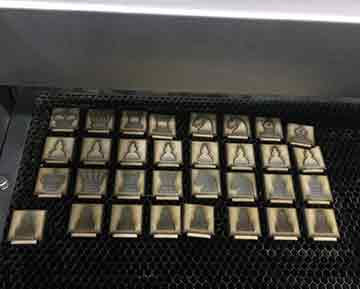 |
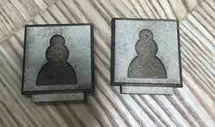 |
Output of chess-pieces |
Close-up of pawns |
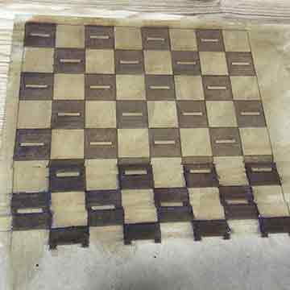 |
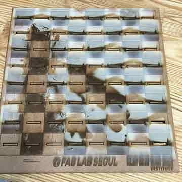 |
Failure of unfixed Z-axis |
Final output of chess-board(before cleaning with water tissue) |
Many trial with Laser cutter I was surprised with the quality of the laser cutter in Creative Device Lab. It was very easy to use as it recognizes the device as normal inkjet printer. It sends the Illustrator file or Rhinoceros file just before the settings of using the ULP(short for Universal Laser Cutter) and with the failure of not choosing the suitable material i had failure with the engraving but at last i could carve out the Chessboard ready to be played with the pieces.
This is me putting the pieces on chessboards. It was made for hobby-use but later on used in different cases such as for educating first-user visiting FabLab and educating children from suburb cities. I used rubbed hammer for putting the pieces and this is why I call it Hammer Chess.
I had a time play chess with my colleague Sungeun Lee who also participating in Fab Academy played together in FabLab Seoul. It looks very funny because of the fact that the chess pieces are only laser-printed only one- sided. That's why we're looking so funny to look at our own pieces of the Chessboard. and because i didn't take care of the bottom layer of the open-space. It's very stuck to the board.
(MOVIE)
During the video we were saying in Korean 'why are we playing like this?!!!' and other people were laughing at us during our play. It was quite active Chess to as we had to look our pieces constantly. Therefore we used our heads more often than the usual normal chess(maybe i should name it brain chess later on :) ) It was quite a good experience for me to learn the stuff that i needed and much more freely when i was learning the design tools.
Let’s use the vinyl cutter
Just for a quick try I designed a logo of myself with my name on it and because I didn’t clear out the vector lines as you can see on the photo above the lines are cutting all around inside outside like a mess. It was worth a try to see vector lines actually on ‘Cameo Studio’
Before cutting the actual white adhesive paper I checked the cutting output with test cut. the bottom picture was setting the thickness to 8mm and giving a blade 2mm for a actual cut. After the setting I got and output below and for decorating FabLab Seoul I’ve put it on window.
utside like a mess. It was worth a try to see vector lines actually on ‘Cameo Studio’
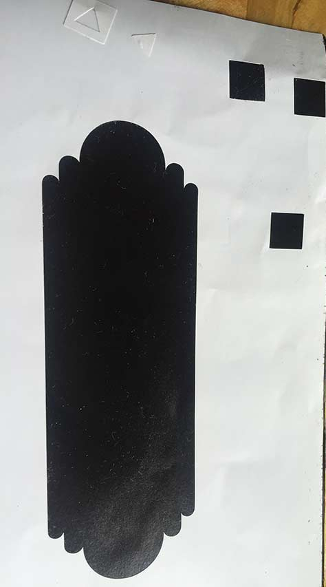 |
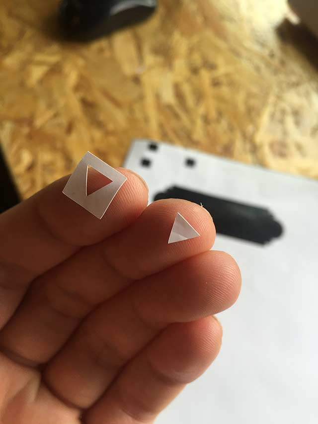 |
Test-cutting |
Pill out adhesive paper |
(photo of vinyl cutter ouput)
I TRIED ...
- X-Cut model (Fab Lab Seoul) : Tried engraving and cutting the photo frame of weekly assignment. looking at the reference table i've checked the thickness and referenced the speed/power in start.
- Universal Laser Cutter (Pangyeo K-ICT Device Lab)
- Silhouette Cameo Studio : for white paper thickness of 6mm and cutting blade of 2mm to make it easily detachable
- AutoCAD 2015 for mac, 2D vector line designing
Summary
One of the very most thing that i've learnt from this week was 'speed and power' there are no regular fixed way to adjust the numbers. I needed my own experience with lots of different materials and try out the different types of 2D making contents. Even with the 2D program I could have a chance to think it and change it into 3D modeling world. Final thing i realized was It's not a tool that decides the product. Which means to me that Even with cheap and portable device artist can make a masterpiece. Likewise I'm looking forward to learn lots of different programs during Academy Session until Summer. To Sum up, I want to modify this frame more big enough so it would be stepping forward with the Academy.
As the time passes, I felt more and more comfortable with design tools and digital fabricating tool such as illustrator and AutoCAD therefore, I could later on come back to schedule and do vinyl cutter for catching up.